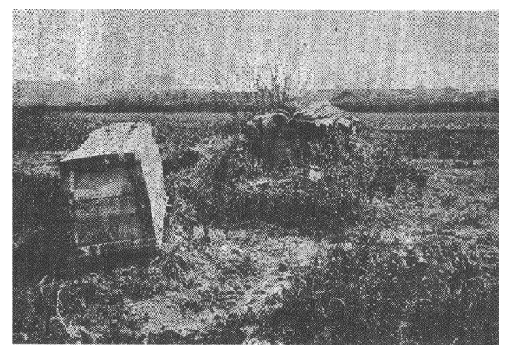

| 火葬と大蔵 焼屍・洗骨・散骨の風俗 | |
| 喜田 貞吉 | |
| (2012) | |
火葬と大蔵
焼屍・洗骨・散骨の風俗
喜田貞吉
続日本紀に、文武天皇四年飛鳥元興寺の僧道照和尚遷化してその屍
を焼いたのが、我が国火葬の初めだとある。その後僅かに中一年を措いて大宝二年には、持統天皇は万乗の尊い御身を以て、御遺骸を荼毘に附せられ給い、爾後歴代の天皇大抵この式によって、御葬儀を挙行された事に見えている。臣僚庶民の間においても無論これが行われたのに相違なく、その事実は考古学上からも或る程度までは立証せられるのみならず、霊異記を見ると、奈良朝から平安朝初期の葬儀が、土葬はむしろ特別の場合という風に見えるによっても察せられる。
火葬は天竺に所謂風火水土の四葬の一つで、かの土には古くから行われていたものらしい。そしてその葬法が仏法とともに我が国に伝わって、入唐求法
の道照和尚によって始めて実行されたということは、まさにしかるべき出来事である。しかしその以前我が国において、果して火葬という事がなかったであろうか。屍体を焼くことはすでに大宝令の本文にも少からず見えている。賦役令に、丁匠役に赴いて道に死せば、これを路次に埋め、本貫に告げて家人の来り取るなくはこれを焼けとか、軍防令に、行軍の際兵士以上身死せば、その屍は当処に焼き埋めよとか、防人
道に在って身死せば、便に随い棺を給して焼き埋めよとかいう類これである。
解する人はこの文を以て大宝当時のものでなく、今伝わっている令の本文は、養老年間に藤原不比等の修正したものであるから、養老当時の実際を書いたものだと言っている。しかし自分は、種々の確証から令の本文が、養老の際にそう改訂せられたのではなく、この文の如きも当初からのままだと確信しているものである。或いはこれが大宝当時のままの文であっても、その令の出来たのは道照火葬の翌年であるから、この始末のよい葬法を早速法令上に応用したのだと言うかもしれぬ。しかしそれ迄に屍を焼くという風習が少しもなかったものならば、いかにそれが便宜な葬法だからと云っても、どうで火葬のことだから、燎原の火の如く火急に広がったものであろうなどと、洒落て済ますべきものではない。葬儀の如きはことに旧習を重んじて、容易に変化し難いものである。さればよしや今存する令の本文が養老の修正であるとしても、本邦火葬の最初といわれる道照荼毘の後二十年にも足らぬこの短日月間に、これを或る場合における常法として法令上強行せしめるまでに、そう急に進展すべきものではなかろう。
自分は固く信ずる。よしや火葬という事が道照によって始まったとしても、屍を焼くという事は遠い古えから我が国に行われていたのであったとの事を。
我が国では屍体を鄭重に扱って、これを墓に蔵
めるの風習のあった事は言うまでもない。しかしながらそれは貴顕豪富の間のみの事であって、一般庶民の間にあっては、殆ど委棄ともいうべき程の手軽な手段を以て、これが始末をつけた事は平安朝頃に至っても頻りに行われていた。孝徳天皇大化の制にも、民亡する時は地に収め埋むと云い、大宝令には或る一定の資格を有するもの以外は墓を営むをえずともあって、その処置極めて簡単なものであった。
右は手軽く埋葬せよとの規定であるが、同時に焼屍とか洗骨とかいう事も行われたらしい。
故意に屍体を始末するの目的を以てでなくとも、事実上屍体を焼くという事は、太古以来行われていたに相違ない。天孫瓊々杵尊
の妃木花開耶姫
は、無戸の産室に籠って火を放って自ら焼かれたとある。幸いにその四柱の御子達は、火中から飛び出されたと伝えているが、御母君の末路は不明である。或いはその産屋の中で、後世所謂火定の終を遂げられたのであったかもしれない。垂仁天皇の皇后狭穂姫は、兄狭穂彦とともに稲城の中で焼死された。無論屍体も焼けてしまった事であったであろう。日本武尊
も危うく駿河の焼津の野火で、屍体をまでも焼かれ給うべきところであった。また葛城円
の大臣は、黒彦皇子・眉輪王等とともに、雄略天皇の為に家ぐるみ焼かれてしまった。蘇我入鹿が山背大兄王を斑鳩宮に焼かしめた時には、灰中の遺骨を見て王既に死し給うと誤解したという事実もある。これらはいずれも火葬の目的ではない。しかし僅かに日本紀の中に散見する、貴顕に関する焼屍の記事のみでもこれだけあってみれば、臣僚庶民の輩に至っては、かかる場合がことに多かったに相違なく、したがって屍体を焼けば始末がよいくらいの事は知っておったであろう。またそれから思い付いたとしても、これを焼いて手軽に始末をつけるという事は、仏式火葬の輸入を待たずして、つとに早く我が国に行われていたと解するのも、あえて不当な臆測とのみは言われまい。賦役令や軍防令に、匠丁兵士防人の屍を焼き埋めることを規定したのも、実際古くからそれらの事が行われていたので、それを条文に上
してあるまでと解してしかるべきことであろう。
果してしからば続日本紀に、道照和尚栗原の火葬を以て、「天下の火葬此れより始まる也」と書いたのはいかに解すべきか、これは葬送の一つの儀式として、仏式により高貴の御遺骸をも荼毘に附するという様になったことの初めだという訳で、単に屍体を焼くという広い意味のものではあるまい。しかしながらこの火葬の法が極めて簡単であるので、従来屍体を焼くことを以てあえて不思議に思わなかった我が国に歓迎せられて、ついに奈良朝頃に至っては、火葬が一般の風習として認められることになったものであろう。

Ⅸ上海付近の墓地
洗骨の風が古く我が国に存したということは、不幸にして未だ記録の上に的確なる証拠を発見しえぬ。しかし近傍の諸民族間には往々にして古くこの風があった。東沃沮
の俗新死者を仮埋めにし、皮肉尽くるを以て骨を取って木槨中に置くと魏志にある。今もこれに似た風が、琉球・台湾・南部支那等に行われている。本号表紙の写真は上海より五哩ばかり、徐家匯附近の庶民の墓処に見るところで、藤波大円君の寄贈にかかる。その左方のは木棺をそのまま雨露に曝したもので、蓋の木材の継目のあたりは、既に腐朽を示している。右方のは土を以て棺を被い、上に瓦を葺いてやや鄭重にこれを保護した有様が見える。いずれもかくして或る年限間これを放置し、皮肉全く腐去するを待って骨を洗い、もとの形に整えてさらにこれを墓に葬るものである。台湾の漢人は高さ二尺余の瓶の中に、関節の部分は藁などで縛って膝を折り腕を曲げた姿勢に作って納めるという（歴史地理三十巻三号柴田常恵君記事を見よ）。
我が国においてもまたかくの如きの葬法の古く行われたことは、古墳の実地から往々証明せられるのである。和田千吉君が考古界六巻一号（明治三十九年十一月）において、常陸国小田村の古墳調査の報告中に掲げられた図を見ると、石室の一端に近く二個の頭蓋骨と下齶骨とを正しく並べ、他方に大髄骨脛骨等数多
の遺骨を、薪を積みたる如く一所に並べて置いた有様が見える。副葬品としては宝珠形鍔の刀剣と管玉鉄鏃等、普通の古墳より発見せらるる類のものがあった。当時和田君はこれを以て、足を折り曲げて置いたものだと解しておられるが、余輩はむしろこれを洗骨の葬儀と見るべきものと解するのである。洗った骨は本の如く並べるのが普通であったであろうが、これはそれが面倒臭かったので、一部分を纏めて置いたものであろう。洗った骨を原位置に並べるという事は、或いは不可能に思われるかもしれぬが、柴田君によれば、既に台湾では藁で縛って、真綿で辮髪をまでつけて、もとの姿勢に作るとあってみれば、我において仰臥の形にそれを並べたと解しても、一向不思議はないのである。
事実上我が古墳の中には、とても屍体のままでは並び切れぬという程の極めて狭い石室中に、二人三人ないし五六人の骨が正しく並んで存在している例が珍らしくない。前記小田村の古墳の如きも、幅僅かに二尺三寸の石室内に、二人分の骨を並べて、しかもその傍らには刀剣二本を安置するの余裕を示しているのである。河野清実君の報告（考古学雑誌五巻十一号）によれば、豊後灰土山古墳の如きは、幅僅かに一尺一寸二分ないし九寸五分の狭い石室中に、二人分の骨が背を向け合して並べられてあった。その後自分もその壙
を実見して、とても屍体二個を並べえぬものだとその場で評したことであった。これは最極端の例で、笠井清三郎君が考古界二巻八号（明治三十六年一月）に報告された美作苫田
郡高野村の古墳の、幅僅かに一尺三寸六分の狭い石室内に、二人の遺骨が打ちちがえに安置してあったのとともに、両大関の地位にあると謂うべきものだが、この類の実例は他にも多い。一尺内外や一尺三寸八分の石室の内には、一人の屍体すら窮屈を感ずべき事である。しかるにその中に明らかに二人分の遺骨が、ほぼ正しい形のままに収められてあったとは、それが洗った骨を原形に並べたと想像せずして何と解することが出来よう。自分が日向小林村で調査した土窟内にも、三人分の遺骨が正しく並べられてあった。これもまた自分は洗骨したものと見るほか他の解釈を知らなかった。石棺にもとても屍体を収め難く思われる程に幅の狭いものがある。神戸夢野で福原潜次郎君の調べられた極小の石棺にも、二人分の遺骨が発見された。これらもまた多くは洗骨の風を認めて後始めて解すべきものであろう。
洗骨がかつて我が国においても行われたであろうとのことについては、自分は既にしばしば歴史地理の誌上（二十五巻五号六頁、三十二巻六号六頁等）に発表しておいた。不幸にして学界の承認を得なかった様ではあるが、しかもそれを立証すべき類例は、かなり多く自分の手許に集まっているのである。けだしこの風は我が石器時代からも存していて、歴史時代にまで引き続き、盛んに行われたものであろう。記録上にこれを見ぬのは、それが普通の事であって、一向珍らしくなかったが為と解するのが至当であるかもしれぬ。播磨風土記飾磨
郡の条に、墓を造って葬り、後其正骨を運び去る
と云い、賀毛郡の条に、朝夕日の隠れぬ地に墓を造って其の骨
を蔵す
などあるのは、たまたま事によって洗骨の事が記されたのだとみればみられぬ事もない。
右は洗った骨を、さらに鄭重に墳墓内に葬ったのであって、現に琉球・台湾・南部支那等に行われているのと同様のものであるが、実際上にはかく墓内に葬ることなく、洗った遺骨をそのまま委棄した場合が多かったらしい。それは次の大蔵の研究によって推し測られよう。
大宝の喪葬令には、三位以上及び別祖・氏宗のほかは墓を営むをえず、また墓を営むをうる資格あるものといえども、もし大蔵
せんと欲するものは聴
せと規定してある。この「大蔵」の字義が明らかでない。本文の意は、三位以上及び別祖・氏宗は墓を営む資格のあるものなれども、もしそれらの人でも墓を営まずして大蔵せんと欲せば、それでも差し支えないとの義である。令集解引くところ、奈良朝当時の註釈なる令の古記には、「若し大蔵せんと欲するものは聴せとは、全く骨を以て除散するを謂ふなり
。若し骨を以て墓に置かば、亦其の意に任すなり」と説明してある。これについて伊勢貞丈は、その安斎随筆において、
案ずるに大蔵は火蔵の誤写にして、火蔵は火葬なるべし。令集解の文、「以レ
骨除散也」とあり。死骸を割き開きて骨を除散することあるべからず。火葬は骨を除散するなれば、火葬を誤て大蔵と写したること疑ふべからざるか。大宝令を定められし頃、既に仏法盛に行はる。仏家に荼毘の葬あり。文武四年道照遷化、火葬あり。此年律令成れり。令に古令新令あり。古令は大宝令なり。今伝はるは新令、是養老の令なり。養老の令なる故、火葬の事ある筈なり。
と云っている。これに対して古事類苑の案には、貞丈の説妥当ならずとし、古記の記事によれば、「其の地に予め一大穴を鑿ち、火葬の後に其骨を墓に収めずして、之を粉砕し、親疎を択ばず皆此に蔵するを謂ふか」と解している。なるほど貞丈の説は妥当ではない。既に令の古記の註釈があってみれば、その本文が大宝の原文なることは疑いを容れぬものであらねばならぬ。何となれば、古記は古令の註釈たる証拠顕然なるものであるから。しからば「養老の令なるが故に火葬の事ある筈なり」の貞丈の弁明は立たぬ。さればとて古事類苑の案もまた落ち付かぬ感がある。大穴に火葬の遺骨を粉砕して合蔵するでは、古記の以骨除散という事には当り難かろう。窪美保昌氏の令新解には、大蔵を以て「共同
の墓」と解しているが、それもまた以骨除散という説明には当らぬ。
しからば「大蔵」とは果していかなるものであろうか。勿論屍体を墓に葬るのではなくして、洗骨にしたか、荼毘に附したか、とにかく皮肉を除き去った遺骨を以て、しかるべき場所に散らしてしまうことであらねばならぬ。それを大蔵というのは、墓などという局限の地に蔵めるのでなくして、大きくこれを天地間に蔵するという意味であるかもしれぬ。
骨を除散することは、事実上我が古代には珍らしい事でなかったらしい。淳和上皇崩御の前、遺詔して御骨を砕いて粉となし、これを山中に散ずべく命じ給うた。これに対して中納言藤原吉野は諫諍を試みたが、その説容れられず、いよいよ御葬式に際しては、遺詔の如く荼毘に附し奉った御骨を砕粉し、大原野西山の嶺上に散らし奉ったとある。されば天皇の御為には山陵の役を起さず、この君に限って延喜式にも、諸陵寮の条に山陵の記事がない。これはすなわち骨を除散せしめた大蔵の顕著なる実例と申し奉るべきものであろう。これは至尊の御葬儀として、空前絶後の例ではあるが、しかしながらかくの如きの葬儀は、親王以下庶民の場合において、古来その例多かったものらしい。藤原吉野の奏言に、
昔宇治稚彦皇子は我が朝の賢明なり。此の皇子遺教して、自ら骨を散ぜしむ
。後世之に傚ふ
。然れども是れ親王の事にして、帝王の迹
にあらず。我が国上古より山陵を起さざるは、未だ聞かざる所なり。
とある。宇治稚彦皇子とは稚郎子皇子の事であろう。皇子薨じて宇治山上に葬るとは日本紀にあるが、散骨の事は記紀その他の古書にかつて見当らぬ。しかしながら藤原吉野の当時には、皇子は散骨の式によって葬られたとの説の信ぜられておった事は疑いなく、そしてそれが流例となって、「後世之に傚ふ」とあってみれば、古来遺骨を散ずるの風のかなり行われていたことは、立派に承認せねばならぬ次第となる。そしてこれ令に所謂「大蔵」ではあるまいか。
大蔵とは骨を除散するを本体とするものであるが、「若 し骨を以て墓に置かば亦其の意に任すなり」とあって、その遺骨を墓に置く場合もあったのである。この場合には、その遺骨の為に新たに墓を造ることもあろう。また前からある墓中にそれを置く場合もあろう。しからばこの骨を墓に置くという大蔵の一種の場合と、普通の埋葬や合葬との間に、どんな区別があったのであろうか。けだし普通の埋葬や合葬とは、屍体をそのまま墓に置く場合を云い、大蔵という方は、皮肉を去った骨をそれに置く場合を云ったのだと解せられる。既に骨という。必ず洗ったか焼いたかしたものであらねばならぬ。屍体を焼き、或いは骨を洗う事の古くあった次第は前項に述べた。令に所謂大蔵が洗骨であったか、或いは火葬であったかは、今これを詳 かにし難いが、ともかく遺骨を葬らずして蒔き散らし、或いはこれを墓に置いたという事実の、古く存在した事は疑いを容れぬ。
底本：「先住民と差別 喜田貞吉歴史民俗学傑作選」河出書房新社
２００８（平成20
）年1
月30
日初版発行
初出：「民族と歴史 第三巻第七号」
１９１９（大正8
）年6
月
※表題は底本では、「火葬と大蔵
」となっています。
入力：川山隆
校正：しだひろし
２０１０年9
月4
日作成
２０１２年5
月16
日修正
青空文庫作成ファイル：
このファイルは、インターネットの図書館、青空文庫（http://www.aozora.gr.jp/）で作られました。入力、校正、制作にあたったのは、ボランティアの皆さんです。